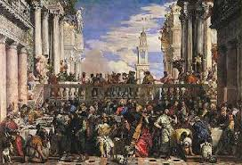
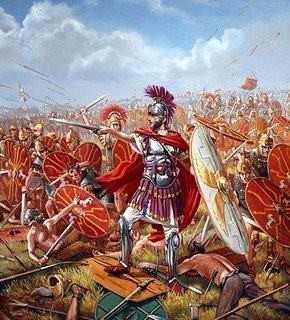
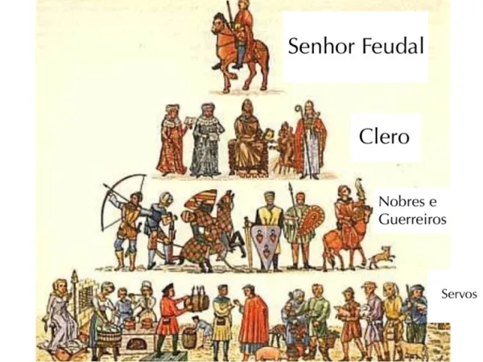
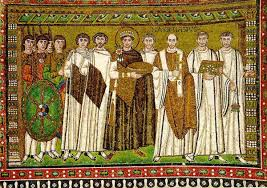
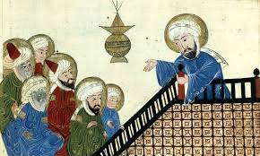
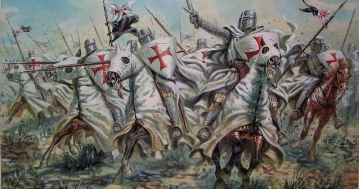
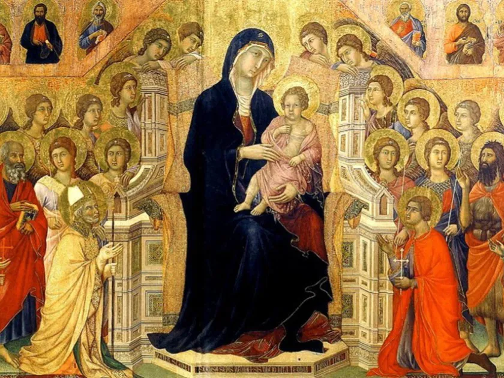

A Idade Média é o período da história que se estende de 476 a 1453, sendo marcada pela queda do Império Romano do Ocidente e pela tomada de Constantinopla pelos turcos-otomanos, respectivamente. Este período histórico é também conhecido pela consolidação do feudalismo, pelo fortalecimento da Igreja Católica e por importantes transformações na Europa, como a fusão das culturas romana e germânica
A formação dos reinos bárbaros ocorreu entre os séculos III e V d.C., com o enfraquecimento e a queda do Império Romano do Ocidente, quando povos germânicos como Francos, Visigodos, Vândalos, Ostrogodos e Anglo-Saxões invadiram e se estabeleceram nas antigas províncias romanas. Esses povos, que o Império Romano chamava de "bárbaros" por não partilharem da sua cultura, formaram seus próprios estados, absorvendo elementos da administração e cultura romanas, mas resultando na fragmentação do poder e na desintegração da sociedade romana.
A Idade Média (séculos V a XV) foi um período histórico dominado pelo feudalismo, um sistema social, político e econômico caracterizado pela descentralização do poder, a terra como principal fonte de riqueza e uma sociedade estamental. A organização social era rigidamente dividida em estamentos como o clero, a nobreza (que possuía as terras e o poder militar) e os servos (que trabalhavam a terra em troca de proteção e pagavam impostos). A economia era predominantemente agrária e de subsistência, com o comércio limitado e restrito às áreas urbanas.
O Império Bizantino, uma continuação do Império Romano do Oriente, durou de 395 a 1453 d.C., com capital em Constantinopla (atual Istambul). Estabeleceu-se como um importante centro comercial e cultural entre Europa e Ásia, preservou o direito romano através do Código Justiniano e foi palco do Grande Cisma do Oriente em 1054, que dividiu a cristandade entre a Igreja Católica Romana e a Igreja Ortodoxa. Sua queda ocorreu em 1453, quando os turcos otomanos conquistaram Constantinopla, marcando o fim da Idade Média.
O "Mundo Islâmico Idade Média" refere-se ao período em que o Islão se expandiu e floresceu, dominando vastos territórios na Ásia, África e Europa, o que coincide com a Idade Média na Europa (aproximadamente do século VII ao século XV). Este período é marcado pela ascensão do Império Árabe, a fundação dos califados (Omíada e Abássida), e a "Idade de Ouro Islâmica" (séculos VIII-XIII), um período de grande desenvolvimento cultural, científico e tecnológico.
As Cruzadas foram uma série de expedições militares religiosas, organizadas pela Igreja Católica e reis europeus entre os séculos XI e XIII, com o objetivo de retomar a Terra Santa (principalmente Jerusalém) do domínio muçulmano. Essas expedições, que envolveram motivadores religiosos, econômicos e políticos, foram caracterizadas pela luta entre cristãos e muçulmanos, resultando em intensos conflitos e na formação de novas rotas comerciais e de contato entre o Oriente e o Ocidente.
A arte e cultura medieval foram fortemente dominadas pela Igreja Católica, com manifestações artísticas que abrangem desde a arte pré-românica, românica e gótica até a literatura trovadoresca. O teocentrismo (Deus no centro do mundo) era a principal característica cultural, refletida em construções religiosas como igrejas e catedrais e em pinturas e vitrais que educavam a população sobre a fé. A cultura era predominantemente religiosa, e a arte servia como instrumento de divulgação e ensinamento do cristianismo.
